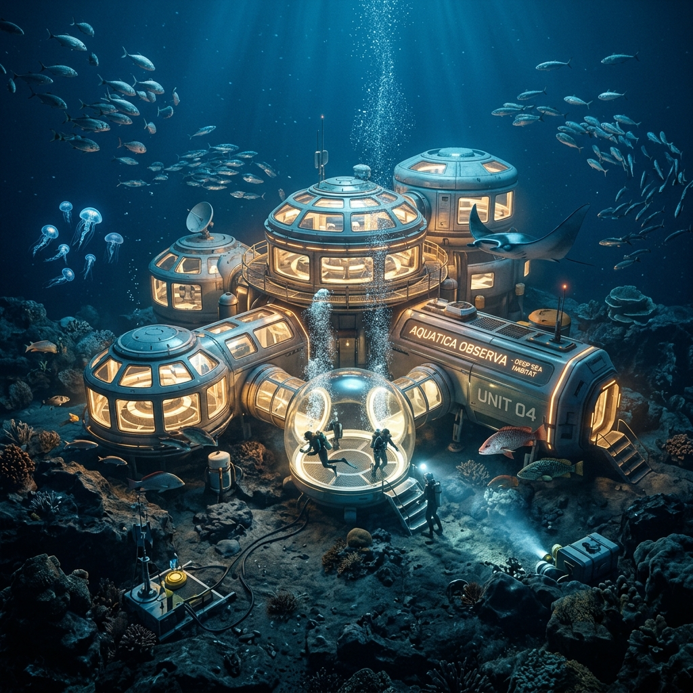
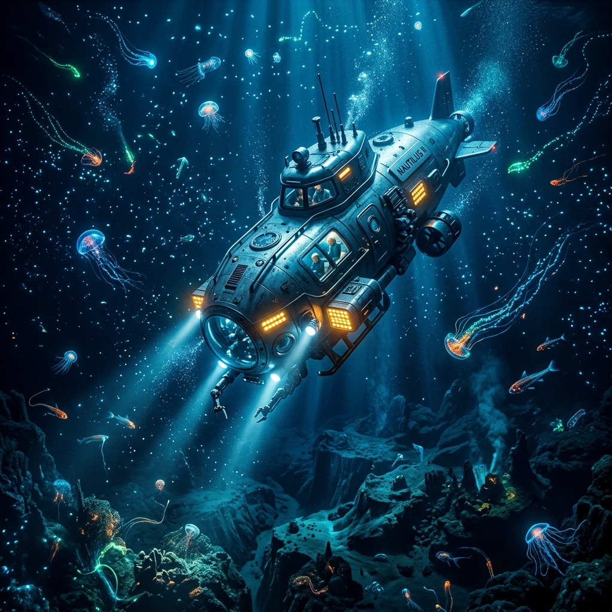
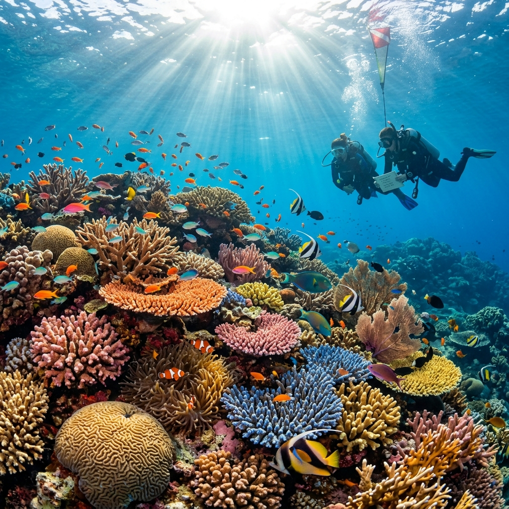
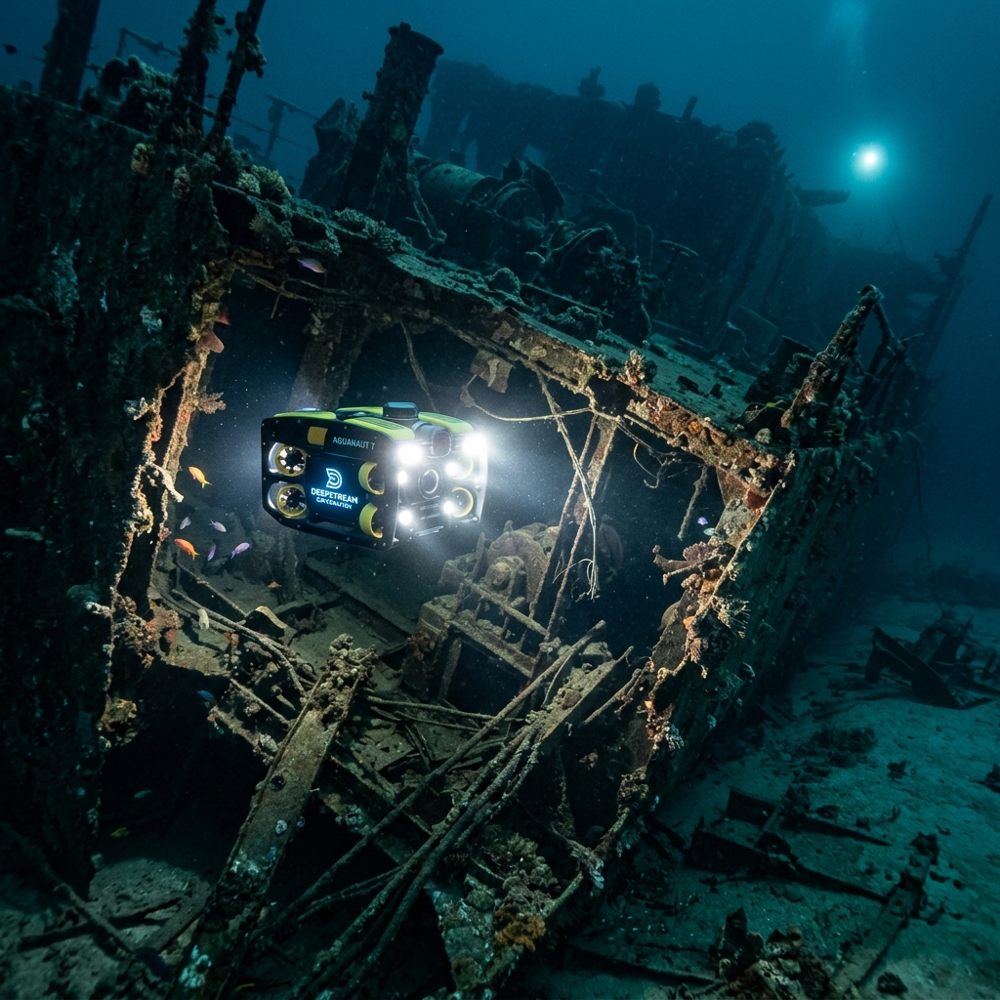

EXPLORING THE FINAL FRONTIER ON EARTH

我们的目标是绘制 95% 尚未探索的海底地图，并研究深海生态系统对全球气候调节的关键作用。
在深海热液喷口发现数千种新物种，它们拥有独特的生化机制，可为生物医药提供全新灵感。
科学评估深海矿产资源，寻找支持绿色能源转型的关键稀有金属，同时确保生态平衡。
海洋吸收了全球 90% 的多余热量。了解深海环流是预测未来气候变化的核心。
建立全球性的深海保护区网络，防止过度开发，保护这一脆弱的蓝色星球根基。

采用新型碳纤维增强钛合金外壳，能够承受超过 1000 个大气压的极端压力。配备 AI 自动避障与 8K 实时影像传输系统。
自主作业时间长达 48 小时，支持大面积海底扫描与数据采集。
全球范围内的海平面、温度与叶绿素实时监控系统。
部署在关键海域的海底基阵，提供持续的声学与环境参数监测。

利用 3D 打印基底，加速受损珊瑚礁的恢复速度。

智能拦截系统，在河流入海口高效清理垃圾。
AI 监控非法渔船，保护公海渔业资源。
高精度传感器部署，预警海洋化学变化。
生命力最旺盛的区域，阳光充足。
光线微弱，许多生物拥有发光器官。
压力巨大，常年处于绝对黑暗中。
极寒与高压，只有特化生物能存活。
地球最深处，人类探索的终极挑战。
得益于多波束测深技术与 AUV 集群的应用，我们在过去五年中测绘的海底面积超过了此前两个世纪的总和。
全球变暖导致的海洋变暖与酸化正严重威胁珊瑚礁与极地生态系统。
今年的预算重点已从单纯的资源勘探转向了长期的生态监测与修复技术研发。
“投资海洋就是投资人类的未来。”
声音在水中传播效率极高。通过水下听音器，我们可以远距离追踪海洋哺乳动物的迁徙，甚至监测到千里之外的海底地震或冰山崩裂。
TRACK: BLUE_WHALE_CALL_RECORDING.MP3
跟随我们的探测器潜入海底 10,928 米。这段珍贵的影像记录了人类首次在如此深度发现塑料垃圾，向全球敲响了环保警钟。
通过“奋斗者”号载人潜水器，我们成功在万米深渊采集了岩石、海水及生物样本，填补了该深度科考的空白。
发现了适应极高压环境的新型微生物，并在其基因组中提取出了具有潜在工业价值的耐压酶。
头部的发光器是其捕食的致命诱饵。
通过生物化学反应产生变幻莫测的色彩。
深海中神龙见首不见尾的顶级掠食者。
富含锰、镍、铜等关键稀有金属。
主要分布在海山地区，价值巨大。
形成于热液喷口，矿化程度极高。
即可燃冰，潜在的巨大清洁能源。
每年有超过 800 万吨塑料垃圾流入海洋。通过改变生活方式，我们可以从源头切断这一污染链条。
优先选择无包装或极简包装产品。
推广可循环使用的生活器具。
完善废弃塑料的回收再利用体系。
发展现代深远海养殖，提供高质量蛋白质来源的同时减轻近海压力。
推广负责任的生态旅游，让人们在领略海洋之美的同时增强保护意识。
明确领海、毗连区及专属经济区的法律地位与管辖权。
所有涉海重大工程必须通过严格的环境影响评估。
推动国家管辖范围以外区域生物多样性的保护与可持续利用。
PROTECTING OUR COMMON HERITAGE